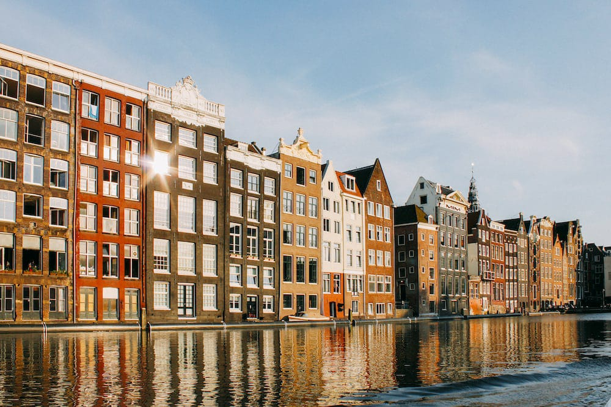
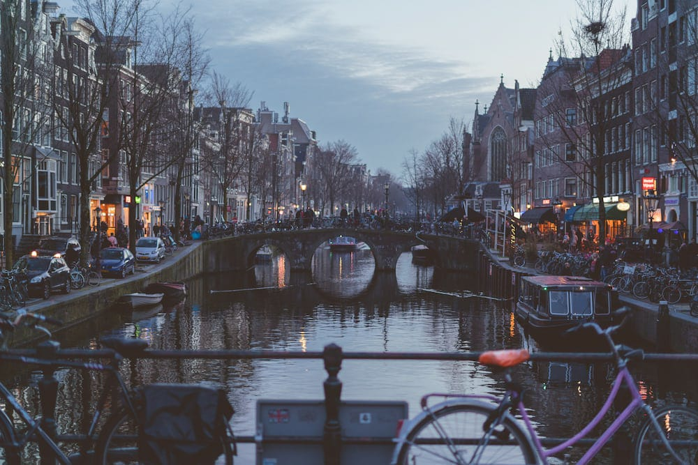
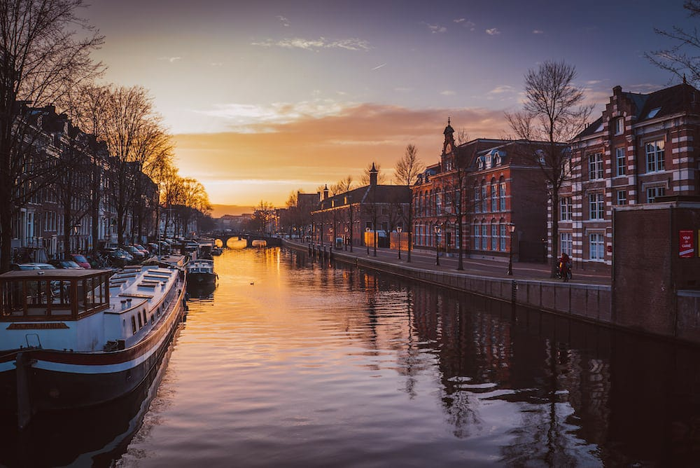
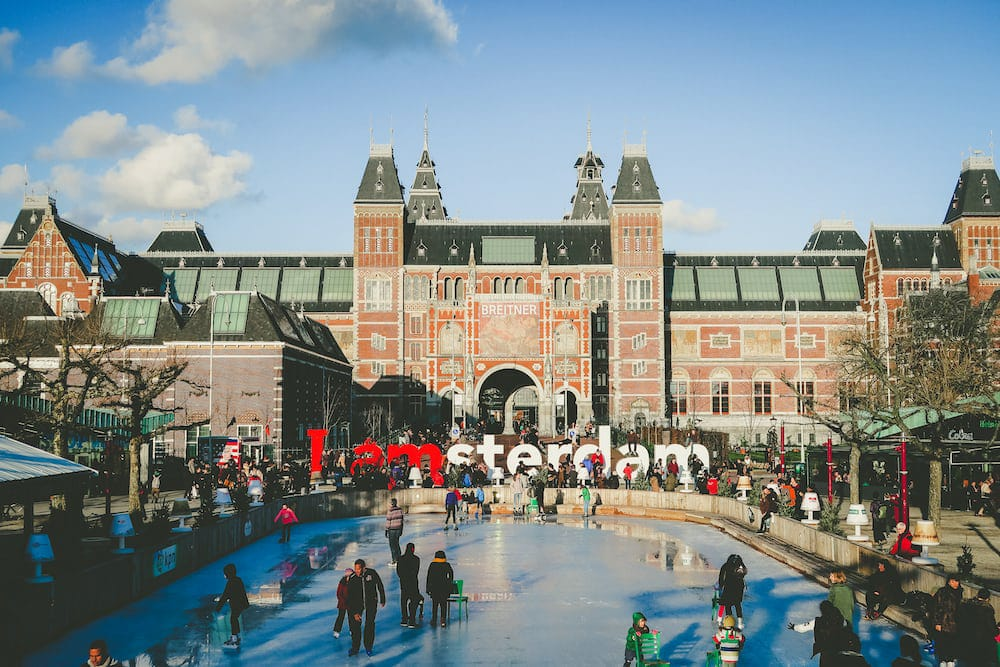

Amsterdam




Amsterdam is the capital and most populous city of the Netherlands, with The Hague being the seat of government. It has a population of 921,402 within the city proper, 1,457,018 in the urban area and 2,480,394 in the metropolitan area. Located in the Dutch province of North Holland, Amsterdam is colloquially referred to as the "Venice of the North", for its large number of canals, now designated a UNESCO World Heritage Site.
Amsterdam is a global city and one of the world's leading financial centers. It is also a major center for international trade, culture, media and the arts. The city is home to many world-renowned museums and art galleries, including the Rijksmuseum, the Van Gogh Museum, and the Anne Frank House. Amsterdam is also known for its liberal social policies, such as its tolerance of soft drugs and prostitution.
Some of the things that Amsterdam is famous for include:
Canals: Amsterdam has over 165 canals, which are a UNESCO World Heritage Site. The canals are a great way to see the city and are popular with tourists and locals alike.
Museums: Amsterdam is home to some of the world's best museums, including the Rijksmuseum, the Van Gogh Museum, and the Anne Frank House.
Art and culture: Amsterdam has a rich cultural heritage and is home to many theaters, galleries, and music venues.
Liberal social policies: Amsterdam is known for its liberal social policies, such as its tolerance of soft drugs and prostitution.
Bicycles: Amsterdam is a very bike-friendly city and there are more bicycles than people in the city.
Things to do in Amsterdam:
Take a canal cruise: This is a great way to see the city and learn about its history.
Visit the Rijksmuseum: This museum houses a large collection of Dutch art, including works by Rembrandt, Vermeer, and Van Gogh.
Visit the Van Gogh Museum: This museum is dedicated to the life and work of Vincent van Gogh.
Visit the Anne Frank House: This is the former home of Anne Frank and her family, who hid from the Nazis during World War II.
Visit the Red Light District: This is a famous area of Amsterdam where prostitution is legal.
Visit the Dam Square: This is the central square in Amsterdam and is home to the Royal Palace, the Nieuwe Kerk, and the National Monument.
Rent a bike and explore the city: Amsterdam is a very bike-friendly city and there are many bike paths to choose from.
Visit a museum: Amsterdam has many other museums to choose from, including the Museum of the Tropics, the NEMO Science Museum, and the Hermitage Amsterdam.
See a show: Amsterdam has many theaters and concert halls, so there is always something to see.
Enjoy the nightlife: Amsterdam has a vibrant nightlife scene with many bars, clubs, and restaurants to choose from.
No matter what your interests are, you are sure to find something to enjoy in Amsterdam. It is a vibrant and cosmopolitan city with something to offer everyone.
photo dowload
photo1
photo2
photo3
photo4